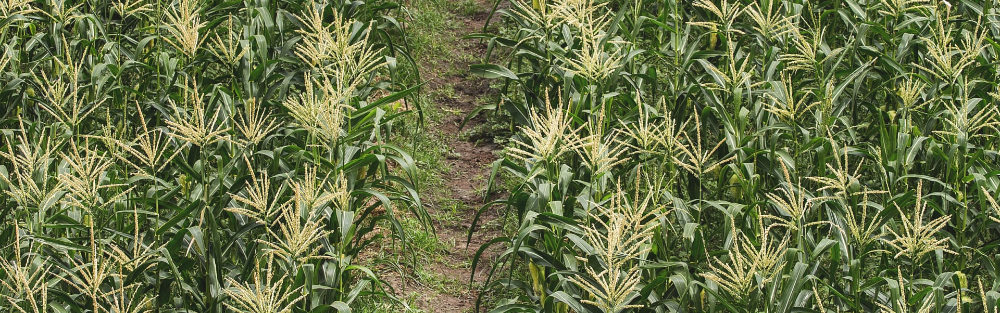
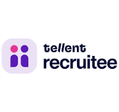

Our aim is to lead the digital transformation in agriculture towards environmentally and economically sustainable farming.
The Plantix Crop Doctor is the worlds most downloaded app for farmers - combining artificial intelligence and the expertise of leading research institutions around
the globe. Millions of customers use the Plantix farmers app to diagnose crop problems, get unbiased recommendations about treatments and the best suited
products at a local store. Plantix Partner and Partner Dukaan build the biggest network of agri-retail shops and sell better being digital. The combination of our
products connects small-scale farmers and suppliers in one digital ecosystem, providing them with customized solutions, reliable products and trusted services.
With our team of 250 passionate people, we create a radical change in agriculture to enrich farming livelihoods and feed future generations.
Hiring with
